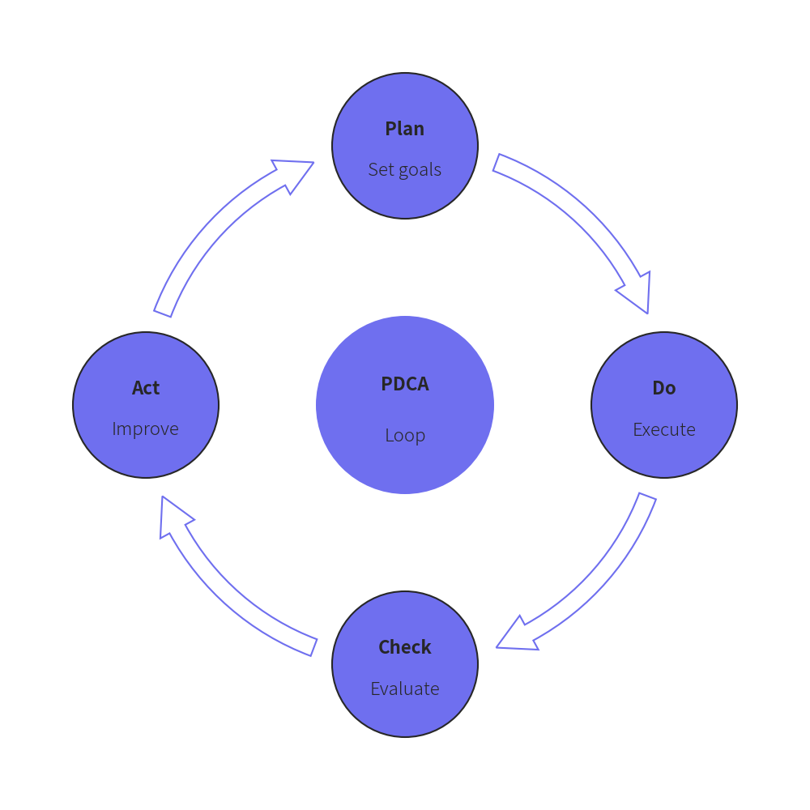
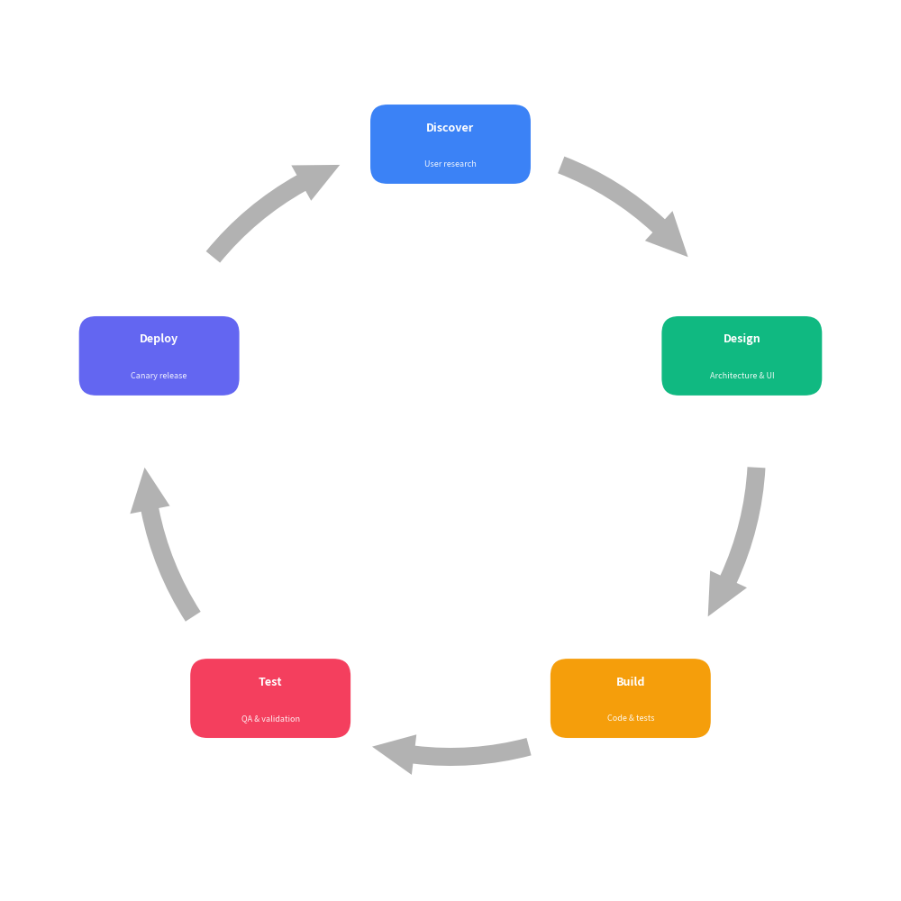

Cycle
Class Cycle renders circular and cyclical process diagrams, perfect for continuous workflows such as PDCA loops, agile iterations, life cycles, and feedback mechanisms.
from drawlib import canvas
from drawlib.smartarts import Cycle
canvas.initialize()
# Classic PDCA cycle with center topic and matching arc arrows
cycle = Cycle(
center_text="PDCA",
center_description="Loop",
center_radius=11.0,
node_radius=9.0,
arrow_width=2.2,
arrow_head_width=4.8,
)
cycle.append("Plan", description="Set goals")
cycle.append("Do", description="Execute")
cycle.append("Check", description="Evaluate")
cycle.append("Act", description="Improve")
cycle.draw(xy=(50.0, 50.0), radius=32.0)

from drawlib import canvas
from drawlib.smartarts import Cycle
canvas.initialize()
# Continuous product lifecycle with rounded rectangle blocks
cycle = Cycle(
node_shape="rectangle",
node_size=(18.0, 9.0),
arrow_width=2.0,
arrow_head_width=4.5,
arrow_color_mode="monochrome",
)
cycle.append("Discover", description="User research")
cycle.append("Design", description="Architecture & UI")
cycle.append("Build", description="Code & tests")
cycle.append("Test", description="QA & validation")
cycle.append("Deploy", description="Canary release")
cycle.draw(xy=(50.0, 50.0), radius=34.0)

1. Quick Start
Create a circular workflow diagram:
from drawlib import canvas
from drawlib.smartarts import Cycle
canvas.initialize()
cycle = Cycle()
cycle.append("Plan", description="Define goals")
cycle.append("Do", description="Implement")
cycle.append("Check", description="Review")
cycle.append("Act", description="Scale")
cycle.draw(xy=(50.0, 50.0), radius=32.0)
2. API Specification
Cycle()
Initialize a Cycle SmartArt instance.
Args:
clockwise(bool): Whether the cycle flows clockwise (True) or counter-clockwise (False). Defaults toTrue.start_angle(float): Angle in degrees for the first node (0is right,90is top). Defaults to90.0.node_shape(Literal["circle", "rectangle", "none"]): Shape of step nodes. Defaults to"circle".node_radius(float): Radius of step circles whennode_shapeis"circle". Defaults to8.0.node_size(tuple[float, float]): Width and height(w, h)whennode_shapeis"rectangle". Defaults to(18.0, 10.0).description_placement(Literal["inside", "outside"]): Placement of description text. Defaults to"inside".arrow_type(Literal["arc", "line", "none"]): Style of connecting arrows ("arc"for curved block arrow,"line"for arc line, or"none"). Defaults to"arc".arrow_width(float): Tail thickness of block arrow or line width of arc line arrow. Defaults to2.0.arrow_head_width(float): Head width of block arrow. Defaults to4.5.arrow_color_mode(Literal["monochrome", "match_source", "match_target"]): Arrow color resolution. Defaults to"match_source".arrow_gap(float): Distance margin between arrow endpoints and step nodes. Defaults to2.5.default_style(str | Style | None): Default style for step nodes. IfNone, palette colors are automatically applied.default_textstyle(str | Style | None): Default style for primary title text.default_description_style(str | Style | None): Default style for secondary description text.default_arrow_style(str | Style | None): Default style for connecting arrows.palette(Sequence[tuple[int, int, int]] | None): Optional sequence of colors to style consecutive steps.center_text(str): Optional title text for the center node (creating a Radial Cycle).center_description(str): Optional description text for the center node.center_radius(float): Radius of the center circle. Defaults to10.0.center_style(str | Style | None): Custom style for the center node circle.center_textstyle(str | Style | None): Custom style for the center node title.center_description_style(str | Style | None): Custom style for the center node description text.
Methods
append(text, description="", style=None, textstyle=None, description_style=None, arrow_style=None): Append a step to the cycle.extend(texts, descriptions=None): Append multiple steps at once.insert(index, text, description="", style=None, textstyle=None, description_style=None, arrow_style=None): Insert a step at the specified index.set_center(text, description="", radius=None, style=None, textstyle=None, description_style=None): Configure the optional center node for a Radial Cycle.draw(xy, radius=35.0, align="center"): Draw the cycle on the canvas atxy.
© 2026 drawlib by Yuichi Ito. Released under the Apache 2.0 License.